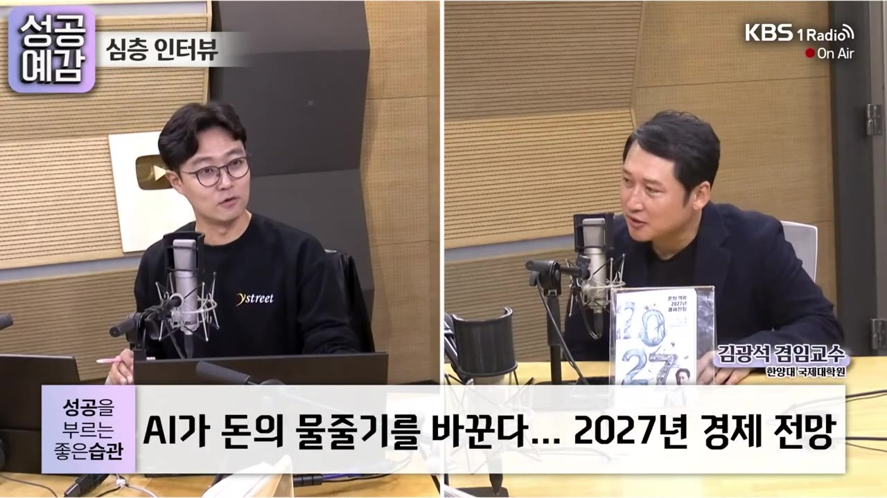

[성공예감 이대호입니다] 2부 풀영상｜AI가 돈의 물줄기를 바꾼다…2027년 경제 전망 - 김광석 겸임교수 (한양대 국제대학원)｜KBS 261023 방송
▶ 원본 영상 보기한눈에 보기
- 김광석 교수는 2027년을 '역류점'(자막에는 '영류'로 나옴)이라고 부릅니다. AI 때문에 돈이 거꾸로 흐르기 시작한다는 뜻으로, 한국 잠재성장률은 2.1%(올해)·2.2%(내년)로 40년 만에 처음 2년 연속 오른다고 봅니다.
- 최근 기술주 급락('메타 쇼크')은 실적이 나빠서가 아닙니다. 빅테크의 잉여현금흐름이 마이너스로 돌아서면서 자금이 쪼들린 탓이라는 진단이고, 실물경제와 자본시장은 따로 봐야 한다고 말합니다.
- 주도주는 해마다 바뀌어 왔습니다(GPU → 메모리). 교수는 다음 주도주로 AI 밸류체인 안의 피지컬 AI와 전력을 꼽습니다.
- 11월 미국 중간선거 뒤에는 트럼프 레임덕이 오고, 민주당이 크게 이기면 데이터센터 규제·국방예산 동결·셧다운 위험이 커질 수 있다고 봅니다.
- 미·중이 빚을 늘리는 경쟁을 벌여 금리가 높게 유지되면 신흥국이 힘들어집니다. 한국은 반도체 세수 덕에 821조 원 슈퍼예산을 짜고도 8년 만에 적자재정에서 벗어난다고 말합니다.
이런 분께 도움이 됩니다
- 요즘 코스피·기술주가 왜 흔들리는지, 내년 경제 흐름을 큰 틀에서 알고 싶은 직장인 투자자
- AI 다음 주도주, 미국 중간선거, 국가부채 같은 변수를 한 번에 정리하고 싶은 분
핵심 내용
오늘 시장 상황 (2:08)
- 원·달러 환율 1,322원대(하락, 원화 강세), 달러인덱스 101.55
- 코스피 −1.72% 5,438, 코스닥 −2.5% 744(자막 그대로)
- 삼성전자 −2.5%. SK하이닉스는 장 초반 급락했다가 강보합으로 돌아섰습니다. 자회사 솔리다임의 IPO(기업공개) 검토를 중단한다는 공시, 즉 중복상장을 하지 않겠다는 발표가 힘이 된 것으로 보입니다.
- 현대차 −3%(29만 원대), KB금융 등 금융주 −3% 이상. 코스닥에서는 바이오·2차전지·로봇·반도체가 대부분 내렸습니다.
'메타 쇼크': 실적은 최고인데 왜 주가가 빠졌나 (4:03)
메타는 매출과 EPS(주당순이익) 모두 시장 기대를 웃돈 역대급 실적을 냈습니다. 그런데 잉여현금흐름(FCF, 쓰고 남은 현금)이 마이너스로 돌아선 것이 문제가 됐습니다.
- 설비투자 확대
- 잉여현금 마이너스
- 외부 자금 조달
- 투자 지속성 의문
- 기술주 조정
- 1설비투자 확대
메타가 케펙스(CAPEX, 설비투자)를 늘리고 투자 가이던스까지 올림. 반도체를 계속 사겠다는 뜻 (5:09)
- 2잉여현금 마이너스
그동안 남는 현금으로 투자했는데 이제 그 돈이 바닥남. 구글(알파벳)은 이미 2분기에 마이너스로 돌아섬
- 3외부 자금 조달
의결권 없는 신주를 발행하고 회사채 발행도 늘림 (5:57)
- 4투자 지속성 의문
케펙스를 떠받쳐 온 4대 빅테크가 앞으로도 투자를 늘릴 수 있을지 의심이 생김
- 5기술주 조정
미국은 기술주가 크게 빠지고 버크셔 해서웨이 같은 가치주는 강하게 오름. 삼성전자·하이닉스 비중이 큰 한국 증시도 영향을 피하기 어려움
- 높은 금리가 자금 압박을 키웁니다. 국채금리가 높으면 회사채 금리는 더 오르기 때문입니다. 교수는 2022~23년 부동산 PF 부실 때 건설사 옥석가리기가 벌어진 것과 같은 일이 지금 AI 기업과 비AI 기업 사이, 그리고 AI 기업 안에서도 벌어지고 있다고 말합니다.
- 교수는 메타를 비롯한 AI·반도체 기업 실적을 내년까지 의심하지 않는다고 합니다. 지금 흔들리는 건 자금 문제라는 것입니다.
💡 실물경제(실적·GDP)와 자본시장(자금 압박)을 구분해서 봐야 합니다. 지금 증시를 흔드는 건 실적이 아니라 '돈 구할 길'입니다.
2027년 키워드 '역류점': 잠재성장률이 거꾸로 오른다 (9:06)
- 위에서 아래로 흐르는 물을 순류, 거꾸로 흐르는 물을 역류라고 합니다. 교수는 AI가 돈의 역류를 불러온다는 의미로 2027년을 '역류점'이라고 이름 붙였습니다.

- 한국 잠재성장률(물가 급등 같은 부작용 없이 낼 수 있는 성장률)은 장기간 계속 떨어져 왔습니다(작년 1.9%, 올해 1.8% 전망).
- IMF가 지난주 전망을 올해 2.1%, 내년 2.2%로 바꿨습니다. 잠재성장률이 2년 연속 오르는 것은 정확히 40년 만이라고 합니다.
세계와 한국의 성장률이 엇갈리는 이유 (11:51)
- 세계 성장률: 줄곧 3.3%~3% 수준이었는데 올해는 3.1%로 팬데믹 이후 가장 낮습니다. 중동 전쟁과 오일쇼크 영향입니다.
- 한국 성장률: IMF 전망이 1.8% → 2.1% → 3.3%로 계속 상향됐습니다.
- 이유는 약 200개 나라 가운데 AI 밸류체인에 참여하는 나라가 많이 잡아 10개, 너그럽게 잡아 20개뿐이기 때문입니다. 나머지 나라들은 AI 호황을 누리지 못합니다.
AI가 잠재성장률을 끌어올리는 원리 (14:31)
- 케빈 워시가 잭슨홀 미팅 연설에서 "생산의 3요소(노동·토지·자본)에 AI를 더한 생산의 4요소"를 말했다고 합니다.
- 잠재성장률은 레고 블록 3개(노동 투입, 자본 투입, 총요소생산성)를 쌓은 높이와 같습니다. 블록이 두꺼워질수록 높아집니다.
| 블록 | AI 시대의 변화 |
|---|---|
| 노동 투입 | 줄어들 수 있음(일하는 시간·고용 규모 감소, 취업자 약 2,900만 명) |
| 자본 투입 | 크게 늘어남(반도체 공장·데이터센터 증설) |
| 총요소생산성 | 크게 늘어남(AI와 함께 일하면서 산출이 늘어남) |
- AI 전환(AX)은 두 가지로 나뉩니다. 제조업에 AI를 들이는 MAX와 서비스업에 들이는 SAX입니다(자막상 '맥스'·'싹스'). 둘 다 활발한 나라는 잠재성장률까지 오릅니다.
💡 노동 블록은 얇아져도 자본과 생산성 블록이 그보다 더 두꺼워져서 탑이 높아집니다.
반도체 투자, 2027년 이후에도 이어질까 (18:30)
- 수요는 의심하지 않습니다. 기기 하나에 들어가는 반도체 개수가 계속 늘고 있기 때문입니다.
| 제품 | 반도체 개수 |
|---|---|
| 내연기관차 | 약 200~300개 |
| 전기차 | 약 700개 |
| 자율주행 전기차 | 약 3,000개 |
| 냉장고 | 예전 2~3개 → 지금 50~100개 → 내년 제품 150개 |
| 첨단 스마트폰 | 약 200개(초고사양) |
- 걱정은 수요보다 공급이 더 빨리 느는 것입니다. 미국(마이크론)과 중국(CXMT·창신메모리, 비메모리는 화웨이)이 각자 반도체를 직접 생산하려 하고, 한국도 생산능력(캐파)을 늘리고 있습니다.
- 메모리 시장에서 창신메모리의 점유율은 24년 1분기 2% → 25년 1분기 8% → 26년 2분기 10%로 올랐습니다.
- 조선·철강·디스플레이·배터리를 중국에 내줬듯 반도체도 뺏길 수 있다는 걱정, 과잉 생산, 투자 지속성에 대한 의문이 이미 증시에 상당 부분 반영돼 있다고 봅니다.
주도주는 계속 바뀐다: 다음은 피지컬 AI와 전력 (21:57)
- 재생에너지
- 메타버스·NFT
- 전기차
- 배터리
- GPU
- 메모리
- 피지컬 AI·전력
- 1재생에너지
2020~21년 ESG 열풍 (22:00)
- 2메타버스·NFT
2022년, 짧게 반짝
- 3전기차
2023년
- 4배터리
2023년 하반기~2024년, 배터리 자체 생산 열풍
- 5GPU
2025년, AI 사이클 본격화. GPU가 가장 부족했고, GPU 공급 속도가 데이터센터 건설 속도를 정함
- 6메모리
2026년. 엔비디아는 박스권에 갇힘
- 7피지컬 AI·전력
교수가 예상하는 다음 주도주 (25:56)
- 강한 실적은 AI 밸류체인 안에서만 나오고 있으니, 다음 주도주도 밸류체인 안에서 찾아야 한다고 말합니다.
- AI 밸류체인 5단계: AI 서비스 기업 / AI 모델 경쟁 기업 / AI 인프라(GPU·HBM·D램 등 반도체) / 전력 인프라 / 통신 인프라
- 반도체주가 계속 떨어진다는 말이 아닙니다. 주가를 끄는 대장주가 바뀔 수 있다는 뜻입니다.
- 다만 지금은 높은 국채금리, 지정학 불안, 중간선거 같은 거시 변수가 증시를 누르고 있습니다. 이 변수들이 걷히고 돈이 다시 몰릴 때 새 주도주가 드러난다고 봅니다.
정상회담과 미국 중간선거 (26:18)
- 정상회담 구간(G20, 11월 말 APEC, 미·중 정상회담): 정상들이 만나기 직전까지 지정학 긴장이 늘 완화됩니다. 2026년 2월부터 이어진 전쟁도 이때는 덜 격해집니다. 긴장이 풀리면 금 같은 안전자산 가격이 내려갑니다.
- 중간선거 이후 레임덕: 연임이 불가능한 2기 대통령은 선거에서 이기든 지든 레임덕이 옵니다. 지지율도 낮아 공화당 의원들이 등을 돌릴 가능성이 더 큽니다.
- 미국 성장에서 케펙스 투자가 차지하는 기여도가 크다고 합니다(구체적 비율은 자막상 불분명). 3분기 GDP 속보치가 10월 마지막 금요일에 나오고, 트럼프는 선거 전까지 투자가 이어지도록 분위기를 유도해 왔습니다. 선거 뒤에는 이런 의지가 약해질 수 있습니다(수능 전후 비유).
- 민주당이 크게 이기면: 데이터센터 건설과 전력망 확충에 대한 규제가 강해질 수 있습니다. 예로 처음으로 데이터센터 건설 금지령을 낸 뉴욕주를 들었습니다. 주민 반대를 등에 업은 야당 쪽 지자체장의 결정이라는 설명입니다.
💡 중간선거가 끝나면 이긴 쪽이 누구든 미국 AI 투자를 밀어 주던 정치적 힘은 약해질 수 있습니다.
피지컬 AI 세상은 냉장고부터 (35:11)
- 교수의 지도교수는 논문 한 편을 구하려고 배를 타고 도쿄대 도서관까지 갔다고 합니다. 2050년의 아이들은 "2026년엔 사람이 엄지로 직접 쇼핑하고 결제했대"라며 웃을 것이라고 말합니다.
- 대표 사례는 AI 냉장고입니다. 가족의 소비 패턴을 익히고, 달걀이 3개 남았는데 내일 5개가 필요하면 알아서 주문합니다. 냉동실에 오래 둔 식재료를 먼저 먹으라고 권하고, 주문과 결제까지 스스로 합니다.
- 교수는 내년에 AI 냉장고·AI PC·AI 스마트폰이 출시된다고 말합니다. "로봇을 먼저 떠올리지 마시라"는 당부도 했습니다. 사람이 묻는 AI에서 가전과 자동차가 AI를 품는 시대로 넘어간다는 것입니다.
미·중의 '부채 패권 전쟁'과 미국 셧다운 위험 (40:41)
- 미국 정부 부채는 40조 달러를 넘었습니다(원화로 약 5경 5천조 원).
- 민주당이 상원과 하원을 모두 잡으면(블루 스윕) 부채한도를 올려 주지 않아 셧다운(정부 업무 정지, 공무원 급여 중단) 가능성이 커집니다. 특히 국방예산을 막을 것이라는 전망 때문에 최근 방위산업주가 약세이고, 실제 결과가 그렇게 나오면 큰 조정이 올 수 있다고 봅니다.
- 미·중은 통화·제조·공급망·AI에 더해 부채 패권 전쟁도 벌이고 있습니다. 서로 빚을 늘려 성장, 국방, 설비투자에 쓰고 있다는 것입니다.
- 교수는 기축통화국인 미국이 실제 디폴트(채무불이행)까지 갈 것으로 보지 않습니다. 돈을 더 찍어 재정을 투입하는 방식이 이어지고, 그만큼 돈의 가치는 떨어진다고 봅니다.
- 진짜 위험은 신흥국에 있습니다. 국채 발행 경쟁으로 미국 10년물 국채금리가 높게 유지되면 그 금리를 감당하지 못하는 나라들이 무너집니다.
💡 미·중의 빚 경쟁에서 쓰러지는 쪽은 미·중이 아니라 높은 금리를 견디지 못하는 신흥국입니다.
한국 재정: 슈퍼예산인데 적자에서 벗어난다 (45:49)
- 내년 예산은 821조 원으로, 전년보다 12% 늘어난 역대급 규모입니다.
- 그런데도 8년 연속 이어진 적자재정을 벗어납니다. 반도체 호황으로 법인세가 많이 걷혀 약 150조 원의 초과 세수가 예산에 반영됐기 때문입니다(자막 그대로).
- 다른 나라들의 재정 불안이 커지는 가운데 한국은 반도체 덕에 재정 건전성이 좋아지는 국면이라고 평가합니다. 진행자는 이 흐름이 계속될지는 더 지켜봐야 한다고 덧붙였습니다.
기억할 숫자·인용
- 한국 잠재성장률(IMF): 작년 1.9%, 올해 1.8% 전망 → 올해 2.1%, 내년 2.2%, 40년 만의 2년 연속 상승
- 성장률: 세계 3.1%(팬데믹 이후 최저), 한국 IMF 전망 1.8% → 2.1% → 3.3%
- AI 밸류체인 참여국: 약 200개국 중 10~20개국
- 창신메모리 메모리 점유율: 2% → 8% → 10%(24년 1분기 → 25년 1분기 → 26년 2분기)
- 기기당 반도체: 내연기관차 200~300개, 전기차 700개, 자율주행 전기차 3,000개
- 미국 정부 부채 40조 달러 이상 / 한국 내년 예산 821조 원(+12%), 초과 세수 약 150조 원
- "노동·토지·자본 말고 하나가 더 있는데 그게 AI다." (케빈 워시 발언을 교수가 소개)
- "실물경제와 자본시장을 구분 지어야 됩니다." (김광석)
- "로봇을 먼저 상상하지 마시고요." (피지컬 AI에 대해, 김광석)
생각해볼 점
- 주도주 예상은 한 사람의 의견입니다. 피지컬 AI와 전력이 다음 주도주라는 말은 교수 개인의 전망이고, 교수도 "무조건 오른다는 말이 아니다"라고 선을 그었습니다. 투자 판단은 각자 확인이 필요합니다.
- IMF 수치가 서로 맞지 않습니다. 잠재성장률 2.1%와 실질성장률 3.3% 전망이 같은 숫자 흐름(1.8 → 2.1)으로 소개돼 자막만으로는 헷갈립니다. 금지령을 낸 주(뉴욕주)나 초과 세수 150조 원 같은 수치도 원자료로 확인하는 편이 안전합니다.
- 설명란에 있는 주제 일부가 이 방송분에 없습니다. "미·중 AI 패권 속 외교 전략"과 "금리·내수·부동산 셈법"은 이번 대담에서 다뤄지지 않았습니다. 부동산 전망을 기대했다면 교수의 책 『돈의 역류 2027 경제전망』 등 다른 자료가 필요합니다.
바로 해볼 일
- 10월 마지막 금요일에 나오는 미국 3분기 GDP 속보치와 11월 중간선거 결과를 달력에 표시하기
- 내 주식·펀드가 AI 밸류체인 5단계(서비스·모델·반도체·전력·통신) 중 어디에 몰려 있는지 적어 보기
- 보유한 빅테크 종목이 있다면 최근 실적 발표에서 매출보다 잉여현금흐름이 어떻게 바뀌었는지 확인하기